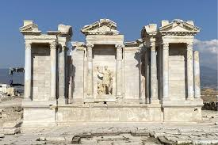
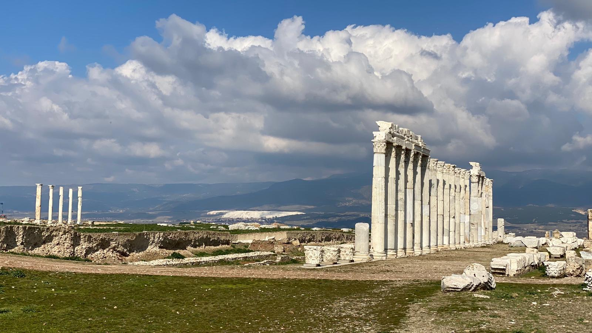

Kent MÖ 261-263 yılları arasında II. Antiokhos tarafından kurulmuş ve kente Antiokhos'un karısı Laodike'nin adı verilmiştir. Antik kentin kuzeydoğu tarafında bulunan büyük tiyatronun ahnesi tamamen yıkılmış olup, cavea ve orkestrası oldukça sağlam durumdadır. Yaklaşık 20.000 kişiliktir. İncil'de vahiy gönderilen 7 kilisenın arasında bulunmaktadır


 "Denizli"ye dönmek için basın
"Denizli"ye dönmek için basın